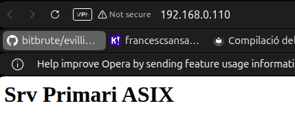
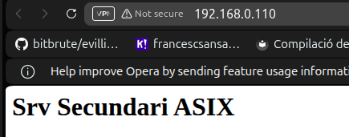

Keepalived i Failover¶
Aquesta és la part clau de la pràctica d'alta disponibilitat.
Comprovar la interfície de xarxa¶
Als dos servidors:
Apunta el nom de la interfície. En molts casos serà ens18 o eth0.
Nota
En els exemples d'aquesta guia es fa servir ens18. Si la teva és una altra, canvia-la.
Configuració del primari¶
global_defs {
enable_script_security
}
vrrp_script chk_apache {
script "/usr/bin/pgrep apache2"
interval 2
weight -60
}
vrrp_instance VI_1 {
state MASTER
interface ens18
virtual_router_id 51
priority 150
advert_int 1
authentication {
auth_type PASS
auth_pass asixha
}
track_script {
chk_apache
}
virtual_ipaddress {
192.168.0.110/24
}
}
Configuració del secundari¶
global_defs {
enable_script_security
}
vrrp_script chk_apache {
script "/usr/bin/pgrep apache2"
interval 2
weight -60
}
vrrp_instance VI_1 {
state BACKUP
interface ens18
virtual_router_id 51
priority 100
advert_int 1
authentication {
auth_type PASS
auth_pass asixha
}
track_script {
chk_apache
}
virtual_ipaddress {
192.168.0.110/24
}
}
Diferències clau
- Primari:
state MASTER,priority 150 - Secundari:
state BACKUP,priority 100
Reiniciar el servei¶
Als dos nodes:
Comprovació de la IP virtual¶
Primer comprova al primari:
Ha d'aparèixer la IP virtual al srv-primari.
Després prova l'accés:

Prova de failover¶
Test important
Aquest és el test que donarà més joc a la presentació.
1. Amb el primari actiu¶
Hauries de veure la pàgina del srv-primari.
2. Simular caiguda del primari¶
Atura keepalived al primari:
O bé atura Apache:
3. Comprovar el secundari¶
Al srv-secundari:
Ara la IP virtual hauria d'haver passat al segon node.
Des d'una altra màquina:
Hauries de veure la pàgina del srv-secundari.

4. Recuperar el primari¶
sequenceDiagram
participant C as Client
participant P as srv-primari
participant S as srv-secundari
participant V as VIP 192.168.0.110
Note over P: MASTER (priority 150)
C->>V: curl http://192.168.0.110
V->>P: Resposta del primari
Note over P: systemctl stop keepalived
Note over S: MASTER (failover)
C->>V: curl http://192.168.0.110
V->>S: Resposta del secundari
Note over P: systemctl start keepalived
Note over P: MASTER (recuperat)